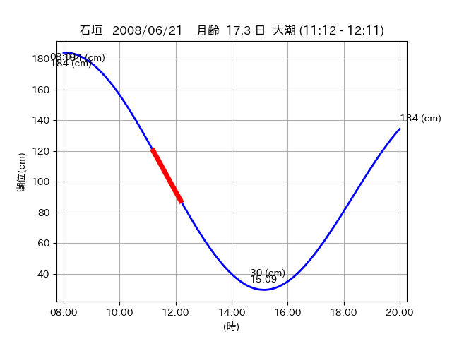

<!DOCTYPE html>
<html>
<head>
    
    <meta http-equiv="content-type" content="text/html; charset=UTF-8" />
    
        <script>
            L_NO_TOUCH = false;
            L_DISABLE_3D = false;
        </script>
    
    <style>html, body {width: 100%;height: 100%;margin: 0;padding: 0;}</style>
    <style>#map {position:absolute;top:0;bottom:0;right:0;left:0;}</style>
    <script src="https://cdn.jsdelivr.net/npm/leaflet@1.9.3/dist/leaflet.js"></script>
    <script src="https://code.jquery.com/jquery-3.7.1.min.js"></script>
    <script src="https://cdn.jsdelivr.net/npm/bootstrap@5.2.2/dist/js/bootstrap.bundle.min.js"></script>
    <script src="https://cdnjs.cloudflare.com/ajax/libs/Leaflet.awesome-markers/2.0.2/leaflet.awesome-markers.js"></script>
    <link rel="stylesheet" href="https://cdn.jsdelivr.net/npm/leaflet@1.9.3/dist/leaflet.css"/>
    <link rel="stylesheet" href="https://cdn.jsdelivr.net/npm/bootstrap@5.2.2/dist/css/bootstrap.min.css"/>
    <link rel="stylesheet" href="https://netdna.bootstrapcdn.com/bootstrap/3.0.0/css/bootstrap-glyphicons.css"/>
    <link rel="stylesheet" href="https://cdn.jsdelivr.net/npm/@fortawesome/fontawesome-free@6.2.0/css/all.min.css"/>
    <link rel="stylesheet" href="https://cdnjs.cloudflare.com/ajax/libs/Leaflet.awesome-markers/2.0.2/leaflet.awesome-markers.css"/>
    <link rel="stylesheet" href="https://cdn.jsdelivr.net/gh/python-visualization/folium/folium/templates/leaflet.awesome.rotate.min.css"/>
    
            <meta name="viewport" content="width=device-width,
                initial-scale=1.0, maximum-scale=1.0, user-scalable=no" />
            <style>
                #map_66de7753dd78a8b8656e40517a84e15a {
                    position: relative;
                    width: 2048.0px;
                    height: 1600.0px;
                    left: 0.0%;
                    top: 0.0%;
                }
                .leaflet-container { font-size: 1rem; }
            </style>
        
</head>
<body>
    
    
            <div class="folium-map" id="map_66de7753dd78a8b8656e40517a84e15a" ></div>
        
</body>
<script>
    
    
            var map_66de7753dd78a8b8656e40517a84e15a = L.map(
                "map_66de7753dd78a8b8656e40517a84e15a",
                {
                    center: [24.371, 123.97],
                    crs: L.CRS.EPSG3857,
                    ...{
  "zoom": 12,
  "zoomControl": true,
  "preferCanvas": false,
}

                }
            );

            

        
    
            var tile_layer_149815c1314b40dc7fe2bedc97ed21dc = L.tileLayer(
                "https://cyberjapandata.gsi.go.jp/xyz/seamlessphoto/{z}/{x}/{y}.jpg",
                {
  "minZoom": 0,
  "maxZoom": 18,
  "maxNativeZoom": 18,
  "noWrap": false,
  "attribution": "\u5730\u7406\u9662\u5730\u56f3",
  "subdomains": "abc",
  "detectRetina": false,
  "tms": false,
  "opacity": 1,
}

            );
        
    
            tile_layer_149815c1314b40dc7fe2bedc97ed21dc.addTo(map_66de7753dd78a8b8656e40517a84e15a);
        
    
            var marker_176b11b36650d88581006f9536507d2c = L.marker(
                [24.3936, 123.9107],
                {
}
            ).addTo(map_66de7753dd78a8b8656e40517a84e15a);
        
    
            var icon_d4f3152c099a244200b1d7000a2d6305 = L.AwesomeMarkers.icon(
                {
  "markerColor": "orange",
  "iconColor": "white",
  "icon": "info-sign",
  "prefix": "glyphicon",
  "extraClasses": "fa-rotate-0",
}
            );
        
    
        var popup_61fdb8312674e82884756278001f4248 = L.popup({
  "maxWidth": "100%",
});

        
            
                var html_151309653bc0cd803e71655049797d28 = $(`<div id="html_151309653bc0cd803e71655049797d28" style="width: 100.0%; height: 100.0%;"><table><tr><td></td></tr><tr><td><center>20080621 No.1 </center></table></td></tr></table</div>`)[0];
                popup_61fdb8312674e82884756278001f4248.setContent(html_151309653bc0cd803e71655049797d28);
            
        

        marker_176b11b36650d88581006f9536507d2c.bindPopup(popup_61fdb8312674e82884756278001f4248)
        ;

        
    
    
                marker_176b11b36650d88581006f9536507d2c.setIcon(icon_d4f3152c099a244200b1d7000a2d6305);
            
    
            var poly_line_53a2c332c4c3dd443f1971ec3cd0d344 = L.polyline(
                [[24.3936, 123.9107], [24.4001, 123.9075]],
                {"bubblingMouseEvents": true, "color": "#FF00FF", "dashArray": null, "dashOffset": null, "fill": false, "fillColor": "#FF00FF", "fillOpacity": 0.2, "fillRule": "evenodd", "lineCap": "round", "lineJoin": "round", "noClip": false, "opacity": 1.0, "smoothFactor": 1.0, "stroke": true, "weight": 3}
            ).addTo(map_66de7753dd78a8b8656e40517a84e15a);
        
    
            var marker_612c36ce34fc66291800b1df07324d1b = L.marker(
                [24.3684, 123.9611],
                {
}
            ).addTo(map_66de7753dd78a8b8656e40517a84e15a);
        
    
            var icon_3455c40a2a8c1e27f91038e64ff529ba = L.AwesomeMarkers.icon(
                {
  "markerColor": "orange",
  "iconColor": "white",
  "icon": "info-sign",
  "prefix": "glyphicon",
  "extraClasses": "fa-rotate-0",
}
            );
        
    
        var popup_9739150013eb401300f253b7eb0fb975 = L.popup({
  "maxWidth": "100%",
});

        
            
                var html_25104865b77299c9605cec0453c0752b = $(`<div id="html_25104865b77299c9605cec0453c0752b" style="width: 100.0%; height: 100.0%;"><table><tr><td></td></tr><tr><td><center>20080621 No.2 </center></table></td></tr></table</div>`)[0];
                popup_9739150013eb401300f253b7eb0fb975.setContent(html_25104865b77299c9605cec0453c0752b);
            
        

        marker_612c36ce34fc66291800b1df07324d1b.bindPopup(popup_9739150013eb401300f253b7eb0fb975)
        ;

        
    
    
                marker_612c36ce34fc66291800b1df07324d1b.setIcon(icon_3455c40a2a8c1e27f91038e64ff529ba);
            
    
            var poly_line_5ede687781509ebbcfdb41b6a3a1989f = L.polyline(
                [[24.3684, 123.9611], [24.361, 123.9549]],
                {"bubblingMouseEvents": true, "color": "#00FFFF", "dashArray": null, "dashOffset": null, "fill": false, "fillColor": "#00FFFF", "fillOpacity": 0.2, "fillRule": "evenodd", "lineCap": "round", "lineJoin": "round", "noClip": false, "opacity": 1.0, "smoothFactor": 1.0, "stroke": true, "weight": 3}
            ).addTo(map_66de7753dd78a8b8656e40517a84e15a);
        
    
            var marker_3bcb5031822d8a113d7e8f5a4964ec7f = L.marker(
                [24.3711, 123.9701],
                {
}
            ).addTo(map_66de7753dd78a8b8656e40517a84e15a);
        
    
            var icon_904965180a054579f916e52edb8792e1 = L.AwesomeMarkers.icon(
                {
  "markerColor": "orange",
  "iconColor": "white",
  "icon": "info-sign",
  "prefix": "glyphicon",
  "extraClasses": "fa-rotate-0",
}
            );
        
    
        var popup_3a7bd90177cf4e1a6667d5318d13d55a = L.popup({
  "maxWidth": "100%",
});

        
            
                var html_6764b3458b11d68aed93335d9a4722ad = $(`<div id="html_6764b3458b11d68aed93335d9a4722ad" style="width: 100.0%; height: 100.0%;"><table><tr><td></td></tr><tr><td><center>20080621 No.3 </center></table></td></tr></table</div>`)[0];
                popup_3a7bd90177cf4e1a6667d5318d13d55a.setContent(html_6764b3458b11d68aed93335d9a4722ad);
            
        

        marker_3bcb5031822d8a113d7e8f5a4964ec7f.bindPopup(popup_3a7bd90177cf4e1a6667d5318d13d55a)
        ;

        
    
    
                marker_3bcb5031822d8a113d7e8f5a4964ec7f.setIcon(icon_904965180a054579f916e52edb8792e1);
            
    
            var poly_line_eb287e48dd8853b52741bf43405e8c9c = L.polyline(
                [[24.3711, 123.9701], [24.3709, 123.9697]],
                {"bubblingMouseEvents": true, "color": "#00FFFF", "dashArray": null, "dashOffset": null, "fill": false, "fillColor": "#00FFFF", "fillOpacity": 0.2, "fillRule": "evenodd", "lineCap": "round", "lineJoin": "round", "noClip": false, "opacity": 1.0, "smoothFactor": 1.0, "stroke": true, "weight": 3}
            ).addTo(map_66de7753dd78a8b8656e40517a84e15a);
        
</script>
</html>